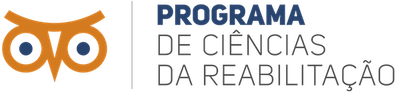

Seminário Interno de Meio Termo

O Seminário
Objetivo
O Seminário Interno de Meio Termo do Programa de Pós-Graduação em Ciências da Reabilitação do Centro Universitário Augusto Motta (PPGCR-UNISUAM) tem como objetivo apresentar e discutir, junto os alunos de graduação e pós-graduação, gestores e setores técnico-administrativos da instituição e pesquisadores de Programas representativos de todos os conceitos da Área 21 Educação Física, as ações e resultados do seu planejamento estratégico no período 2021-2022.
Local
Sobre o evento
O Seminário Interno de Meio Termo é um evento realizado pelo Programa de Pós- graduação em Ciências da Reabilitação (PPGCR) da UNISUAM, como uma das ações do seu Planejamento Estratégico 2021-2024.
Além da UNISUAM, nesta edição haverá apresentações de coordenadores e representantes de Programas de Pós-graduação de São Paulo (PPGFT-UFSCar, USP-RP e PPGFT-UNICID), Ceará (PPGFisio-UFC) e Santa Catarina (PPGCR-UFSC) com conceitos A, 3, 4, 5, 6 e 7 (máxima) na Avaliação Quadrienal 2017-2020. Ao final, uma mesa redonda será composta por todos os palestrantes para amplo debate junto à comunidade.
A Área 21 Educação Física, a Associação Brasileira de Pós-graduação e Pesquisa em Fisioterapia (ABRAPG-FT) e o Brazilian Journal of Physical Therapy (BJPT) também serão representados no evento para ampla disseminação das ações de cada entidade junto à nossa comunidade.
A realização do Seminário é uma forma de dar visibilidade do PPGCR-UNISUAM por meio da divulgação das suas ações – produção científica e formação de pessoal –, estimulando as parcerias interinstitucionais e a consolidação do PPGCR-UNISUAM no Sistema Nacional de Pós-graduação.
O evento conta com o apoio das agências Fundação Carlos Chagas Filho de Amparo à Pesquisa do Estado do Rio de Janeiro (FAPERJ, No. E-26/211.104/2021), Coordenação de Aperfeiçoamento de Pessoal de Nível Superior (CAPES, Código Financeiro 001; No. 88881.708719/2022-01, No. 88887.708718/2022-00).
Comissão Organizadora
- Prof. Dr. Arthur de Sá Ferreira
- Profa. Dra. Patrícia dos Santos Vigário
- Prof. Dr. Thiago Lemos
- Profa. MSc. Júlia Lemos
GT: Programa
- Prof. Dr. Agnaldo José Lopes
- Prof. Dr. Igor Ramathur Telles de Jesus
- Profa. Dra. Laura Alice Santos Oliveira
- Prof. Dr. Renato Santos de Almeida
GT: Formação
- Prof. Dr. Fábio Vieira dos Anjos
- Prof. Dr. Luis Felipe da Fonseca Reis
- Prof. Dr. Ney Armando de Mello Meziat Filho
- Prof. Dr. Thiago Lemos
GT: Impacto na sociedade
- Prof. Dr. Leandro Alberto Calazans Nogueira
- Profa. Dra. Luciana Crepaldi Lunkes
- Profa. Dra. Patrícia dos Santos Vigário
- Prof. Dr. Estevão Rios Monteiro
|
|
|
|
|
|

Observatório de Arthur de Sa Ferreira está licenciado com uma Licença Creative Commons - Atribuição-NãoComercial 4.0 Internacional.
Copyright © 2023 Arthur de Sá Ferreira, DSc. Todos os direitos reservados. Última atualização em